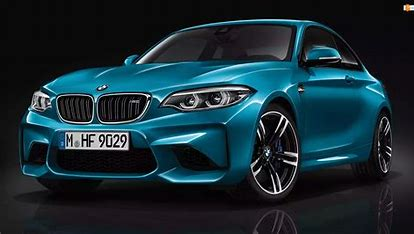

W latach 60. XX w. przy wprowadzeniu na rynek modeli tak zwanej nowej klasy (niem. neue Klasse) w nazwie modeli BMW pojawił się odnośnik do pojemności skokowej silnika.
Ten system nazewnictwa kontynuowano także w modelach serii -02. Wraz z początkiem Letnich Igrzysk Olimpijskich w Monachium w 1972 r. BMW zaprezentował nowy model BMW 520 (czytane pięć – dwadzieścia).
Od tego modelu rozpoczęto jednolite, stosowane do dzisiaj we wszystkich modelach BMW nazewnictwo z podziałem na tzw. klasy.
I tak nazwa BMW 520 oznaczała model serii 5, czyli klasy średniej, a liczba 20 odnosi się do silnika o pojemności skokowej 2,0 litrów.
W późniejszych latach firma rozluźniła tę zasadę i kombinacja dwóch ostatnich cyfr nie zawsze odnosi się do pojemności skokowej silnika zastosowanego w danym modelu.
Oprócz trzech cyfr w nazwie modeli BMW dodawane są litery: np. d – dla silników wysokoprężnych, czy x – dla modeli wyposażonych w układ napędu na cztery koła xDrive.